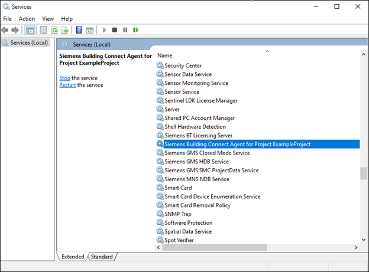
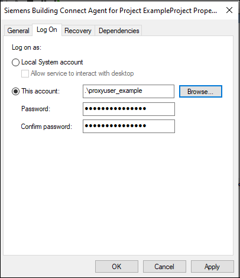
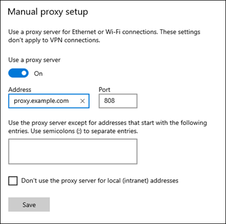
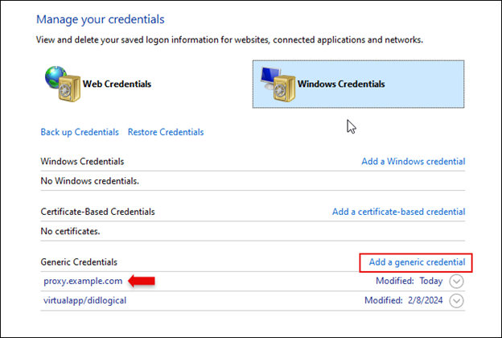
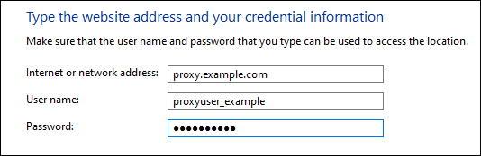
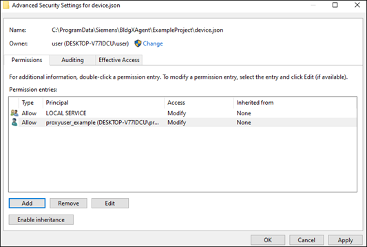

Setting up the Building X Connector to Work Behind a Proxy Server
Your organizational policy may require that you set up the Building X Connector behind a proxy server, secure gateway, or other intermediary. Microsoft Windows contains support for proxy servers within the core operating system, but some adjustments to the proxy settings may be necessary to ensure that your local Desigo CC management station can communicate with Building X.
If your installation does not require a proxy, you can skip this section.
Prerequisites
Proxy settings in Microsoft Windows are tied to user accounts. These instructions will refer throughout to a <proxyuser> account, which is the Windows user account for which the necessary proxy settings and service rights are defined.
Please note that local administrator rights to the Windows machine hosting the Desigo CC server will be needed for any step involving Windows account creation and modification, Windows service modification, or local group policy modification. If a domain account is being used, domain administrator rights will be needed for account creation and modification.
The basic workflow required to configure the Building X Connector to communicate via proxy with Building X is the following:
- Define a <proxyuser> account
- Set the Siemens Building Connect Agent Windows Service to run as the <proxyuser>
- Define proxy server settings for the <proxyuser> account
- Define authentication credentials for the <proxyuser> account
Each of these steps will be explained in the following sections. If you have already created and configured a proxy server, it may not be necessary to follow all of these instructions in order. However, you should review each section to verify that your existing <proxyuser> account satisfies all the conditions set out here.
1. Define a <proxyuser> account
If you already have a designated <proxyuser> account, please check that it meets the minimum requirements defined below.
- Standard user account (local or domain).
- If a domain account is being created, a domain administrator will be needed to perform this step.
- Logon rights to the Windows machine hosting the Desigo CC server.
- The <proxyuser> must be able to log on to Windows to modify its proxy server settings.
- "Log on as a Service” rights on the Windows machine hosting the Desigo CC server. This right will be automatically assigned when the user is defined to run the service in following section (step two):
- To define manually ahead of time, using the Local Group Policy Editor navigate to: Local Computer Policy -> Windows Settings -> Security Settings -> Local Policies -> User Rights Assignment -> Log on as a service and add the <proxyuser> to this policy.
- The <proxyuser> account shall have privileges to use the proxy server to gain access to the internet.
2. Set the Siemens Building Connect Agent Windows Service to run as the <proxyuser>
The Windows service that communicates with Building X is named Siemens Building Connect Agent for Project <Project Name>, where <Project Name> is the name of any project with a Building X Connector installed.
To connect to Building X through a proxy server, we must define the Siemens Building Connect Agent service to run using the designated <proxyuser> account.
- Navigate to the Windows Service Manager.
- Scroll down to the Siemens Building Connect Agent for Project <Project Name>.

- If the service is currently running, stop it.
- Open the properties of the service and navigate to the Log On tab.
- By default, the Building X Connect service uses the “Local Service” account. Click Browse and select the designated <proxyuser> account. Enter the password.

- Click OK.
- NOTE: The user will be granted the “Log On As A Service” right automatically if it does not already have this right, and Windows will confirm this with a popup dialog.
- If you encounter a problem with this step, please see Section 1 (Define a <proxyuser> account) on how to manually grant this right to the <proxyuser> (“To define manually ahead of time…”) and consult with your local IT support for resolution.
At this point you have successfully defined the <proxyuser> account to run the Siemens Building Connect Agent.
3. Define proxy server settings for <proxyuser>
- The following steps must be implemented by the <proxyuser> account created in Step 1 (“ Define a <proxyuser> account”). If you have already set up a proxy server, be sure it conforms to the requirements below.
- Logon as the <proxyuser> and navigate to the proxy settings for Windows. This can be found in Windows Settings -> Network & Internet -> Proxy. The Siemens Building Connect Agent service will use the proxy settings defined in the section entitled Manual Proxy Setup defined here:

- You must fill out the Address and Port fields. The Building X Connector uses only these fields – all others are ignored. The Address field can be an IP address or a domain name.
Note: Do not include the scheme/protocol in the address. For example:
- If your proxy server is https://proxy.example.com/, enter proxy.example.com in the Address field.
- If your proxy server is http://192.168.0.5/, enter 192.168.0.5 in the Address field.
If you are including the protocol prefix in the address, the Building X Connector will be unable to retrieve the correct credentials stored in the Credentials Manager (see the following section).
4. Define authentication credentials for the <proxyuser>
If your proxy server provides unauthenticated access to the internet, you can skip this step.
If your proxy server requires authentication before gaining access to the internet, you will need to save credentials securely (stored encrypted) in the Windows Credential Manager. To gain access to the internet, the Building X Connector will then use those encrypted credentials to authenticate with your proxy. Please note that the Building X Connector only supports basic authentication (name/password) and does not support MFA or other advanced hardware/software based authentication.
- The following steps must be implemented by the <proxyuser> account created in step one (“ Define a <proxyuser> account”).
- Run Windows Credentials Manager under Control Panel -> User Account -> Credentials Manager.
- The credentials for the proxy will need to be placed under Windows Credentials -> Add a Generic Credential:

- The “Internet or network address” defined here must match the proxy address defined in the previous section, and the username and password should be your proxy server authentication credentials. Do not include the scheme/protocol (for example, “https…”) in this field either.

Once you have supplied the credentials, the Building X Connector Agent will be able to retrieve and use them.
Troubleshooting
1. Connecting via proxy if an activation key for the Building X Connector has already been generated
You may have already attempted to obtain an activation key in SMC before realizing that you needed to set up a <proxyuser> account to reach Building X. If this is the case, the activation key you created will not have the correct ownership and file permissions assigned to <proxyuser>, and the connector will list a status of Running, Disconnected. Once you have set up the proxy, you can use the activation key you have already created—but you must take these steps to assign ownership and file permissions for the key to <proxyuser>.
The Building X activation key is located in C:\ProgramData\Siemens\BldgXAgent\<project name>.
In this folder, the activation key data is in a file called device.json. Using an administrator account, you must give the <proxyuser> “modify” rights and ownership of the device.json file.
Assign ownership rights for device.json to an administrator
- In order to change file permission rights of devices.json for <proxyuser>, you must first transfer ownership of the devices.json file to an administrator account. Once the file permissions have been changed by the administrator, you will assign ownership of device.json to <proxyuser> as well.
- Right-click the device.json file and select Properties. Go to the Security tab.
- If the file is not being inspected by an administrator, you will see a message similar to “You must have Read permissions to view the properties of this object.” Click Advanced.
- You will see a line listing “Owner,” and a link to Change owners. Click it.
- Follow the user selection workflow to give ownership of the file to a user account with administrator privileges. Close and reopen the file for these changes to take effect.
- When you reopen the file and go back to the Security tab, you should see a list of settings for group and user membership and file permissions.
Give <proxyuser> “modify” rights for device.json
- Starting from device.json -> Properties, go to the Security tab. Under Permissions, click Advanced.
- The security settings page will list a series of Permission Entries. Click Add to create a new permission entry for <proxyuser>.
- At the top of the menu, click the link to Select a Principal.
- The user account selection workflow will open. Select the <proxyuser> account.
- Once you have selected the <proxyuser> account, you must assign permissions to the device.json file. Be sure that the Modify, Read & Execute, Read, and Write permissions are all selected. The permission type should be Allow.
- Select OK. Confirm that you want to save the changes when prompted.
- You should now see the <proxyuser> listed with Modify rights under the Permission Entries:

Assign ownership of device.json to <proxyuser>
- On the same Advanced Security Settings tab where you see the Permission entry for <proxyuser> (see above screenshot), click the Change link for Owner.
- Go through the user account selection workflow again to select the <proxyuser> as owner.
At this point, the <proxyuser> will have control of the activation key and be able to connect to Building X via proxy.